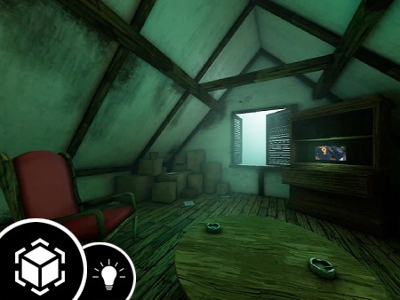
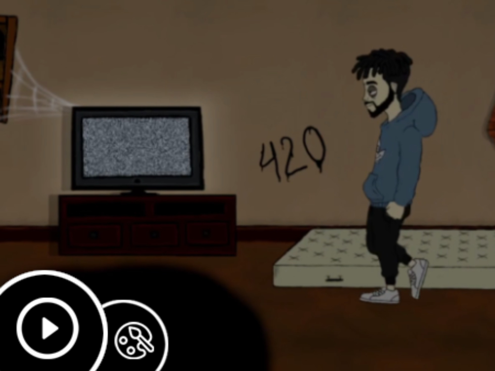
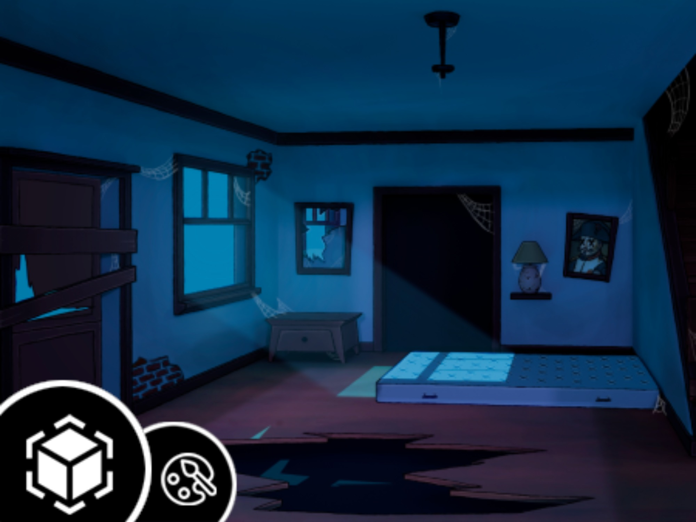
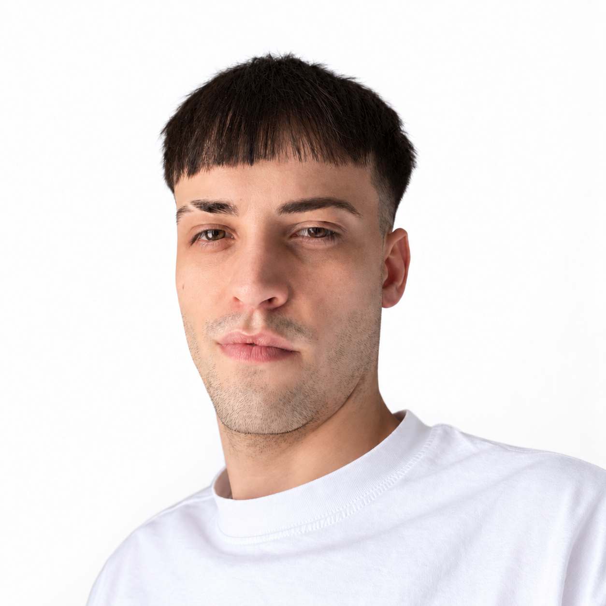

EN DESARROLLO
Un-Credibles
Un party multijugador de superhéroes para hasta cuatro jugadores, con minijuegos competitivos.
DESARROLLADOR DE VIDEOJUEGOS
Programación de gameplay, sistemas y multijugador.
Mi punto de partida: Unity y C#.
// Del código a la experiencia.
var developer = new
{
Name = "Habana",
Role = "Game Developer",
Stack = new[]
{
"Unity", "C#"
},
Focus = new[]
{
"Gameplay",
"Multiplayer",
"Game AI"
},
AlwaysLearning = true
};Desarrollo de juegos
Gameplay y sistemas
Multijugador online
Arte y animación
Creación visual
Edición de vídeo
02 / TODOS LOS PROYECTOS
Videojuegos, prototipos, entornos 3D y animación. Todos mis proyectos, con sus demos, procesos y código.
EN DESARROLLO
Un party multijugador de superhéroes para hasta cuatro jugadores, con minijuegos competitivos.
01 / SHOOTER ROGUELIKE
Patinaje y combate en tercera persona en un mundo posapocalíptico estilizado. Movimiento rápido, hordas de enemigos y progresión roguelike.
Proyecto académico en equipo. La publicación presenta un shooter que conecta movimiento sobre patines, combate y progresión.
Los cambios públicos del 7 de mayo incluyen la barra de vida de enemigos, una etiqueta de caminos para detectar superficies y la incorporación de la escena Gameplay a la build.
02 / MULTIJUGADOR EN TIEMPO REAL
Un prototipo centrado en la sincronización de jugadores y el combate hitscan. Desde entrar a una sala hasta reaparecer después de cada enfrentamiento.
Matchmaking por salas, cambio de armas, respawn, chat, killfeed y clasificación. La publicación en The Rookies incluye una demostración de gameplay.
Proyecto personal de mejora, según la descripción del repositorio.
03 / ENDLESS RUNNER
Esquivar, sobrevivir y superar la marca anterior. Un runner 2D de inspiración arcade con dificultad progresiva y sistema de puntuación.
El proyecto combina animaciones, sonido, obstáculos y progresión de dificultad. Trabajo académico con colaboración acreditada en The Rookies.
El repositorio público actual es FINGERRUN_REPO.

ENTORNO / UNITY
Un pequeño entorno centrado en la iluminación cálida, la composición y los materiales para crear una atmósfera acogedora y envejecida.
Ver en The Rookies ↗
ANIMACIÓN / UNITY · PHOTOSHOP
Personajes y escenario creados con assets de Photoshop. Rigging e IK dentro de Unity con sus herramientas de animación 2D.
Ver en The Rookies ↗
ENTORNO / BLENDER · PHOTOSHOP
Modelado, iluminación y composición en Blender, con un trabajo posterior de pintura en Photoshop para refinar las formas y la atmósfera.
Ver en The Rookies ↗EN VÍDEO
Una selección de mi trabajo, en movimiento.
Si el reproductor no carga, ver la demo reel en YouTube ↗.
03 / DETRÁS DEL CÓDIGO

Soy Cristian Rivero Llácer,
pero puedes llamarme Habana.
Mi trabajo se centra en Unity y C#: lógica de juego, sistemas reutilizables, multijugador e IA. El 3D y la creación audiovisual completan mi forma de construir y presentar experiencias interactivas.
Unity · C# · Photon PUN
Netcode for GameObjects
Blender · Photoshop
Substance Painter · CapCut
CFGS en Animación 3D, Juegos
y Entornos Interactivos
También trabajo con assets y contenido visual para GTA Roleplay / FiveM, con ajustes puntuales de scripts.
CÓDIGO / PROCESO / RESULTADO